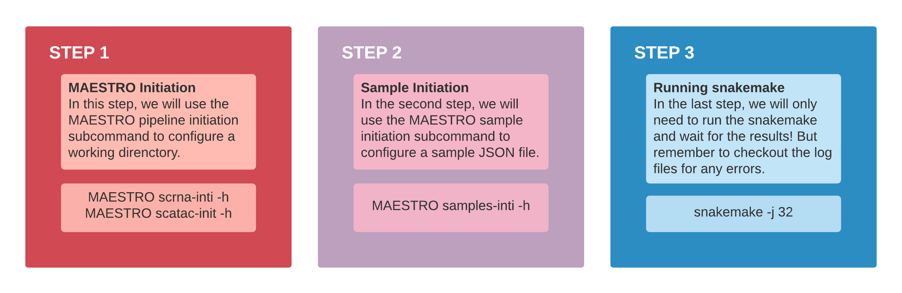

Last updated: 2021-07-27
Checks: 7 0
Knit directory: MAESTRO_documentation/
This reproducible R Markdown analysis was created with workflowr (version 1.6.2). The Checks tab describes the reproducibility checks that were applied when the results were created. The Past versions tab lists the development history.
Great! Since the R Markdown file has been committed to the Git repository, you know the exact version of the code that produced these results.
Great job! The global environment was empty. Objects defined in the global environment can affect the analysis in your R Markdown file in unknown ways. For reproduciblity it’s best to always run the code in an empty environment.
The command set.seed(20201223) was run prior to running the code in the R Markdown file. Setting a seed ensures that any results that rely on randomness, e.g. subsampling or permutations, are reproducible.
Great job! Recording the operating system, R version, and package versions is critical for reproducibility.
Nice! There were no cached chunks for this analysis, so you can be confident that you successfully produced the results during this run.
Great job! Using relative paths to the files within your workflowr project makes it easier to run your code on other machines.
Great! You are using Git for version control. Tracking code development and connecting the code version to the results is critical for reproducibility.
The results in this page were generated with repository version 4a7b06f. See the Past versions tab to see a history of the changes made to the R Markdown and HTML files.
Note that you need to be careful to ensure that all relevant files for the analysis have been committed to Git prior to generating the results (you can use wflow_publish or wflow_git_commit). workflowr only checks the R Markdown file, but you know if there are other scripts or data files that it depends on. Below is the status of the Git repository when the results were generated:
Ignored files:
Ignored: .DS_Store
Ignored: .RData
Ignored: .Rhistory
Ignored: .Rproj.user/
Ignored: analysis/.DS_Store
Ignored: code/.DS_Store
Ignored: data/.DS_Store
Ignored: data/multi-scatac/.DS_Store
Ignored: data/multi-scrna/
Untracked files:
Untracked: .RDataTmp
Untracked: code/snRNA_genelength.R
Untracked: code/snRNA_genelength_TPM.R
Untracked: data/allen/
Untracked: data/multi-scatac/bed/
Untracked: data/multi-scatac/bigwig/GDF7_bed_added.png
Untracked: output/snRNA_TPM_VS_genelength.png
Untracked: output/snRNA_genelengthVSLognormUMI.png
Untracked: output/snRNA_genelengthVSUMI.png
Unstaged changes:
Deleted: MultiSample_scATACseq.Rproj
Deleted: atac_pbmc_500_nextgem.GIGGLE/0.peaks.bed
Deleted: atac_pbmc_500_nextgem.GIGGLE/0.peaks.bed.gz
Deleted: atac_pbmc_500_nextgem.GIGGLE/0.peaks.bed.result.xls
Modified: code/Basic_Operations.R
Modified: pbmc_1k_v3_8k_res.rds
Modified: pbmc_1k_v3_Monocyte_filtered.pdf
Modified: pbmc_1k_v3_Monocyte_top.pdf
Note that any generated files, e.g. HTML, png, CSS, etc., are not included in this status report because it is ok for generated content to have uncommitted changes.
There are no past versions. Publish this analysis with wflow_publish() to start tracking its development.
MAESTRO(Model-based AnalysEs of Single-cell Transcriptome and RegulOme) is a comprehensive single-cell RNA-seq and ATAC-seq analysis suit built using snakemake. MAESTRO combines several dozen tools and packages to create an integrative pipeline, which enables scRNA-seq and scATAC-seq analysis from raw sequencing data (fastq files) all the way through alignment, quality control, cell filtering, normalization, unsupervised clustering, differential expression and peak calling, celltype annotation and transcription regulation analysis. Currently, MAESTRO support Smart-seq2, 10x-genomics, Drop-seq, SPLiT-seq for scRNA-seq protocols; microfudics-based, 10x-genomics and sci-ATAC-seq for scATAC-seq protocols.
MAESTRO provides ten functions serving as sub-commands. To get a full list of commands and descriptions:
MAESTRO
usage: MAESTRO [-h] [-v]
{scrna-init,scatac-init,integrate-init,samples-init,mtx-to-h5,count-to-h5, merge-h5,scrna-qc,scatac-qc,scatac-peakcount,scatac-genescore}| Subcommand | Description |
|---|---|
scrna-init |
Initialize the MAESTRO scRNA-seq workflow. |
scatac-init |
Initialize the MAESTRO scATAC-seq workflow. |
integrate-init |
Initialize the MAESTRO integration workflow. |
samples-init |
Initialize samples.json file in the current directory. |
mtx-to-h5 |
Convert 10X mtx format matrix to HDF5 format. |
count-to-h5 |
Convert plain text count table to HDF5 format. |
merge-h5 |
Merge multiple HDF5 files, e.g. different replicates. |
scrna-qc |
Perform quality control for scRNA-seq gene-cell count matrix. |
scatac-qc |
Perform quality control for scATAC-seq peak-cell count matrix. |
scatac-peakcount |
Generate peak-cell binary count matrix. |
scatac-genescore |
Calculate gene score based on the binarized scATAC peak count. |
The most general use case for MAESTRO is to process single-cell data with a streamlined pipeline. The basic idea of running MAESTRO is summarized as the following three steps.

The full MAESTRO workflow requires extra annotation and reference files. If you want to take full advantage of the pipeline, please download the following:
For scRNA-seq, please download STARsolo index from link STAR human and STAR mouse. If the sequencing platform is Smart-seq2, please also download RSEM prefix from RSEM human and RSEM mouse.
For scATAC-seq, please download reference file from human and mouse. If using chromap as mapping tool (which is much faster), please also build the index file using chromap -i -r ref.fa -o ref.index.
mkdir MAESTRO/references
cd MAESTRO/references/
tar xvf pbmc8k_fastqs.tar
mkdir scRNA
cd scRNA/
wget http://cistrome.org/~galib/MAESTRO/references/scRNA/Refdata_scRNA_MAESTRO_GRCh38_1.2.2.tar.gz
tar xvzf Refdata_scRNA_MAESTRO_GRCh38_1.2.2.tar.gz
cd ../
mkdir scATAC
cd scATAC/
wget http://cistrome.org/~galib/MAESTRO/references/scATAC/Refdata_scATAC_MAESTRO_GRCh38_1.1.0.tar.gz
tar xvzf Refdata_scATAC_MAESTRO_GRCh38_1.1.0.tar.gz
#build index for chromap. Only take a few minutes.
chromap -i -r Refdata_scATAC_MAESTRO_GRCh38_1.1.0/GRCh38_genome.fa -o GRCh38_chromap.indexcd ../
mkdir annotation
cd annotation/
wget http://cistrome.org/~alynch/data/lisa_data/hg38_1000_2.0.h5wget http://cistrome.org/~galib/MAESTRO/references/giggle.all.tar.gz
tar xvzf giggle.all.tar.gzWe also provide small data sets for users to try out the pipeline (sampling from 10x fastq files). Data can be downloaded from the link scRNA-seq and scATAC-seq.
sessionInfo()R version 4.1.0 (2021-05-18)
Platform: x86_64-apple-darwin17.0 (64-bit)
Running under: macOS Big Sur 10.16
Matrix products: default
BLAS: /Library/Frameworks/R.framework/Versions/4.1/Resources/lib/libRblas.dylib
LAPACK: /Library/Frameworks/R.framework/Versions/4.1/Resources/lib/libRlapack.dylib
locale:
[1] en_US.UTF-8/en_US.UTF-8/en_US.UTF-8/C/en_US.UTF-8/en_US.UTF-8
attached base packages:
[1] stats graphics grDevices utils datasets methods base
other attached packages:
[1] workflowr_1.6.2
loaded via a namespace (and not attached):
[1] Rcpp_1.0.6 whisker_0.4 knitr_1.33 magrittr_2.0.1
[5] R6_2.5.0 rlang_0.4.11 fansi_0.5.0 highr_0.9
[9] stringr_1.4.0 tools_4.1.0 xfun_0.24 utf8_1.2.1
[13] git2r_0.28.0 jquerylib_0.1.4 htmltools_0.5.1.1 ellipsis_0.3.2
[17] rprojroot_2.0.2 yaml_2.2.1 digest_0.6.27 tibble_3.1.2
[21] lifecycle_1.0.0 crayon_1.4.1 later_1.2.0 sass_0.4.0
[25] vctrs_0.3.8 promises_1.2.0.1 fs_1.5.0 glue_1.4.2
[29] evaluate_0.14 rmarkdown_2.9 stringi_1.6.2 bslib_0.2.5.1
[33] compiler_4.1.0 pillar_1.6.1 jsonlite_1.7.2 httpuv_1.6.1
[37] pkgconfig_2.0.3